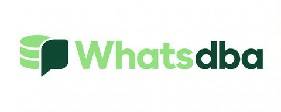

A InfraCtrl assume a operação da sua infraestrutura para que sua equipe possa focar no produto. Monitoramos, protegemos, mantemos e evoluímos servidores, cloud, redes, bancos de dados e ambientes críticos.
Empresas de tecnologia que confiam a operação à InfraCtrl
Quando um servidor apresenta problema, o desenvolvedor para o que está fazendo. Quando o banco fica lento, alguém precisa investigar. Quando um backup falha, alguém precisa descobrir. Quando um certificado expira, alguém precisa correr atrás. Quando a infraestrutura cai de madrugada, alguém precisa acordar.
Isso tira o foco do produto e transforma o time de desenvolvimento em uma equipe de infraestrutura improvisada. A InfraCtrl assume essa responsabilidade: monitoramos, administramos e evoluímos o ambiente continuamente para que sua equipe se concentre no que realmente gera valor para a empresa.
Indisponibilidade em horário crítico, e ninguém monitorando fora do expediente para agir antes do cliente perceber.
Existe no papel, mas nunca foi restaurado de verdade. No dia do desastre, é tarde para descobrir que não funciona.
Firewall mal configurado e exposição a ransomware colocam dados e reputação em risco todos os dias.
Você ou seu dev sênior parando de construir produto para resolver crise de infraestrutura. Caro e insustentável.
Você não está comprando Zabbix, Docker, Terraform ou Grafana. Está comprando infraestrutura disponível, monitorada, segura e administrada por especialistas.
Assumimos a operação da infraestrutura da sua empresa, desde servidores e sistemas operacionais até monitoramento, manutenção e documentação.
Monitoramento contínuo de servidores, aplicações, serviços, recursos e indicadores críticos, com alertas e atuação preventiva.
Gestão de ambientes físicos, virtuais e cloud, incluindo AWS, Azure, VPS, servidores Linux e Windows.
Monitoramento de backups, políticas de retenção, testes e estratégias para recuperação do ambiente.
Firewalls, VPNs, redes, acessos, segmentação e controles de segurança.
Automação de infraestrutura, CI/CD, Docker, Ansible, Terraform e processos operacionais.
Monitoramento e administração de SQL Server e MySQL, incluindo performance, bloqueios, queries lentas e disponibilidade.
Um servidor pode estar online enquanto o banco de dados está apresentando problema. Por isso, ambientes SQL Server e MySQL contam com monitoramento especializado através do WhatsDBA, ferramenta própria desenvolvida dentro da nossa operação de infraestrutura.
Os alertas chegam direto no WhatsApp — mais uma camada de observabilidade para os ambientes de banco de dados dos nossos clientes.

A InfraCtrl trabalha na camada de infraestrutura. Nossa operação é construída para ambientes em que servidores, bancos de dados, cloud e aplicações são críticos para o negócio.
Não queremos apenas atender chamados. Queremos assumir a responsabilidade pela infraestrutura e trabalhar de forma preventiva.
Time formado para operar infraestrutura crítica, não para abrir e fechar chamados.
Você fala direto com quem cuida do seu ambiente, sem camadas de atendimento no meio.
Desenvolvemos nossas próprias ferramentas, como o WhatsDBA, para cobrir lacunas que o mercado não resolve.
Do primeiro contato à operação sob controle, em quatro passos.
Mapeamos servidores, aplicações, bancos, redes, backups, acessos e riscos.
Configuramos monitoramento, documentação, acessos, rotinas de backup e os controles necessários.
Acompanhamos continuamente o ambiente e atuamos nos incidentes e problemas identificados.
Entregamos recomendações, melhorias e acompanhamento contínuo da infraestrutura.
Você não simplesmente "contrata suporte". A InfraCtrl entra, entende o ambiente, documenta, identifica riscos, implanta monitoramento e começa a assumir a operação.
O que muda quando a infraestrutura para de doer.
De servidores locais que caíam à nuvem gerenciada, com DR e custo menor.
Do servidor local à Oracle Cloud, com segurança refeita e conta ~R$2.400/mês menor.
Da DigitalOcean à Oracle Cloud, com deploys sem downtime e os devs de volta ao produto.
Diagnóstico gratuito e primeiro mês flexível em qualquer plano.
 SQL Server
SQL Server
 MySQL
MySQL
 Oracle Database
Oracle Database
 Linux
Linux
 Docker
Docker
 Terraform
Ansible
Zabbix
Grafana
Terraform
Ansible
Zabbix
Grafana
 AWS
AWS
 Azure
Azure
Operamos e monitoramos estas tecnologias em produção, com técnicos certificados Oracle no time.
Converse com a InfraCtrl e descubra onde estão os riscos e gargalos do seu ambiente. Sem compromisso e sem vendedor insistente: você preenche, a gente analisa e devolve os principais riscos e o que priorizar, mesmo que você não feche nada.